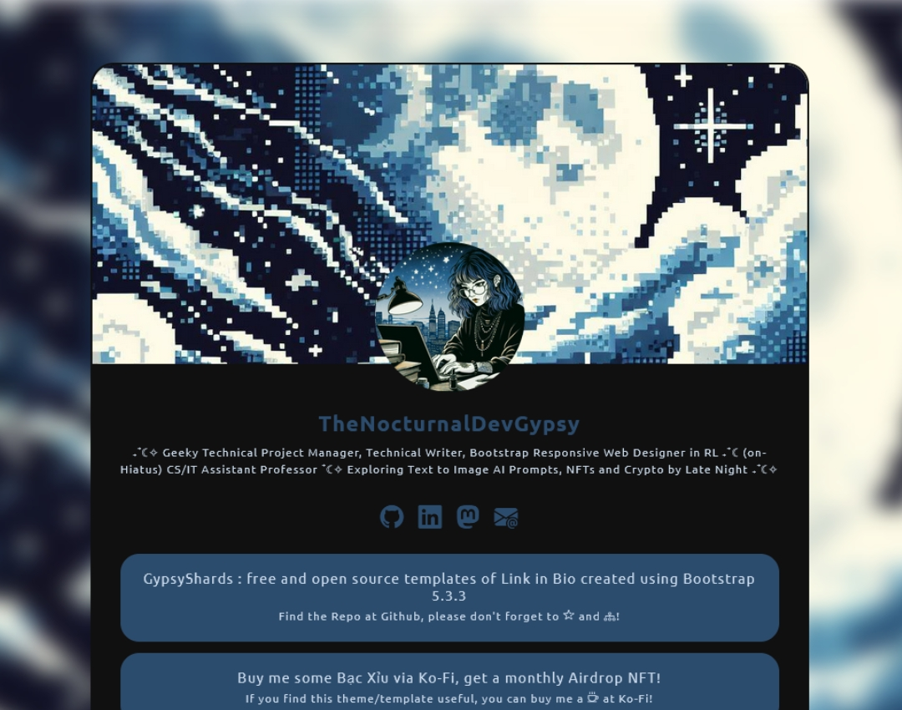
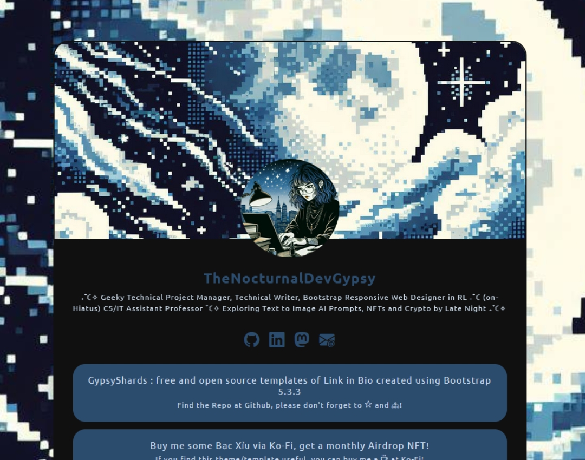
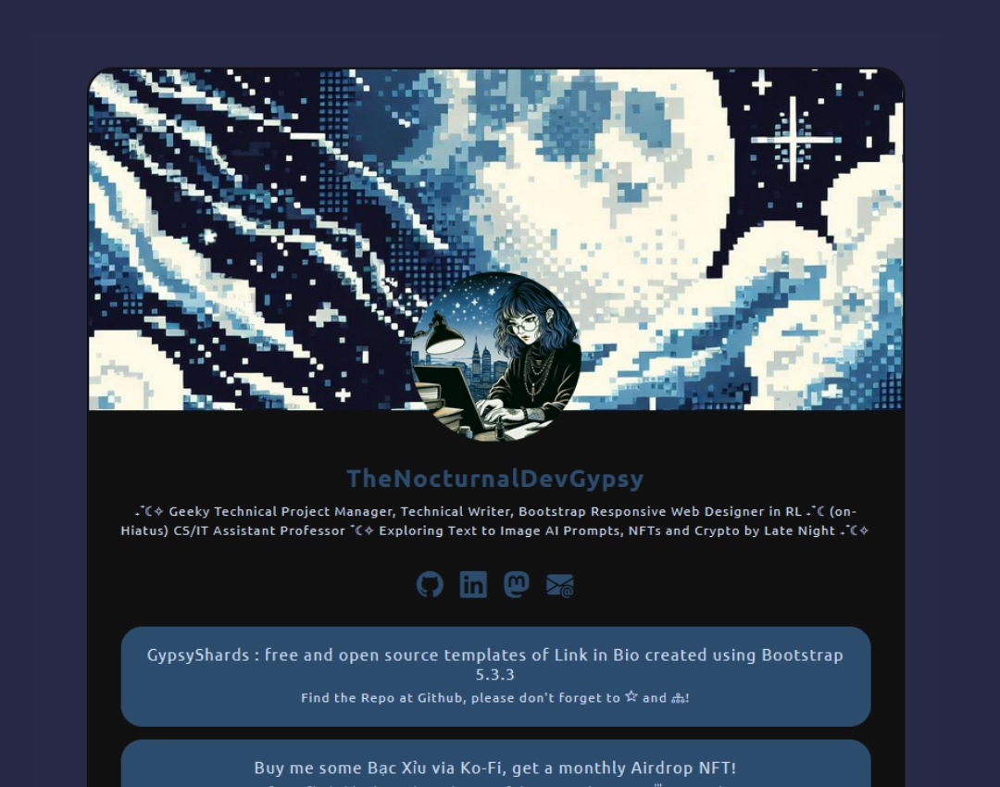
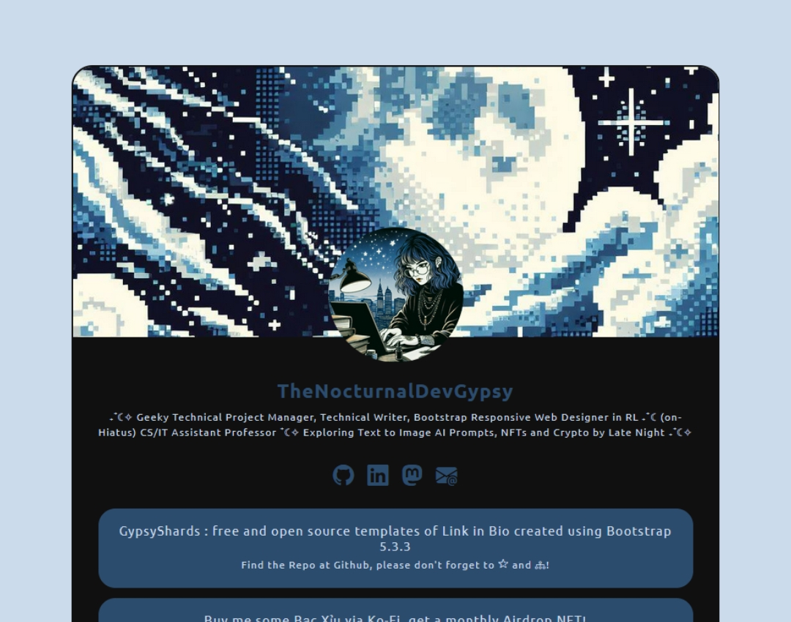
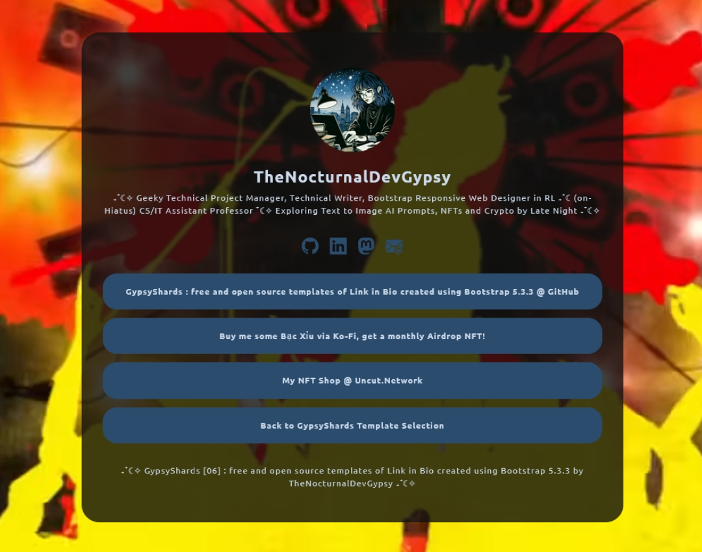
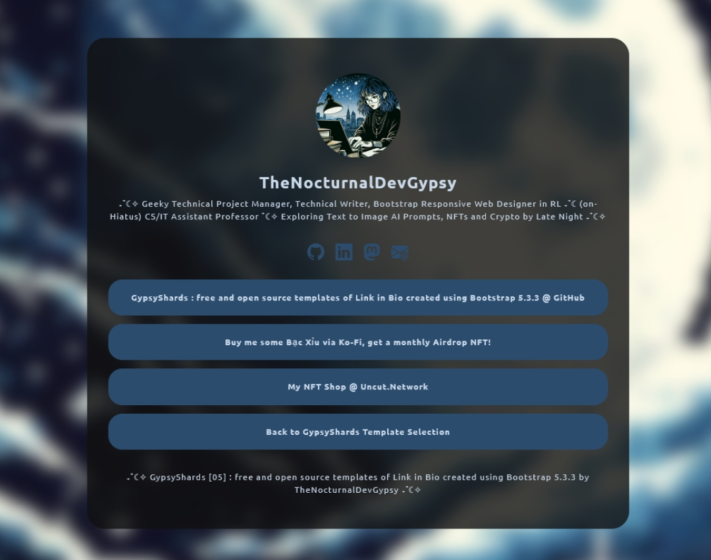
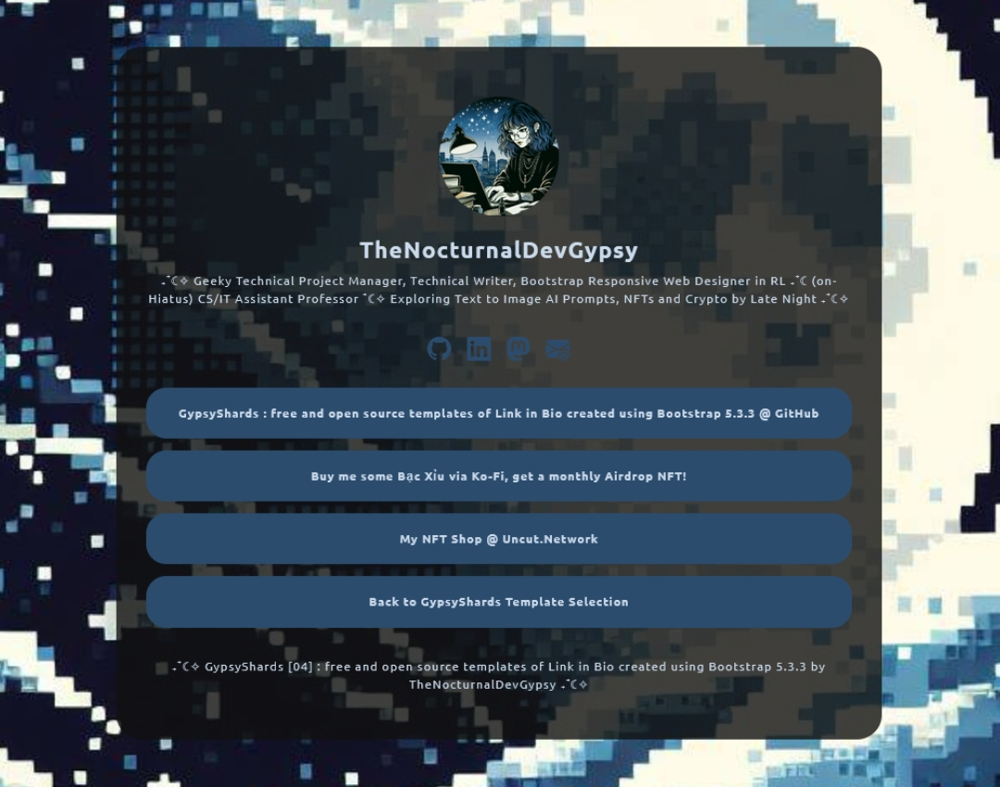
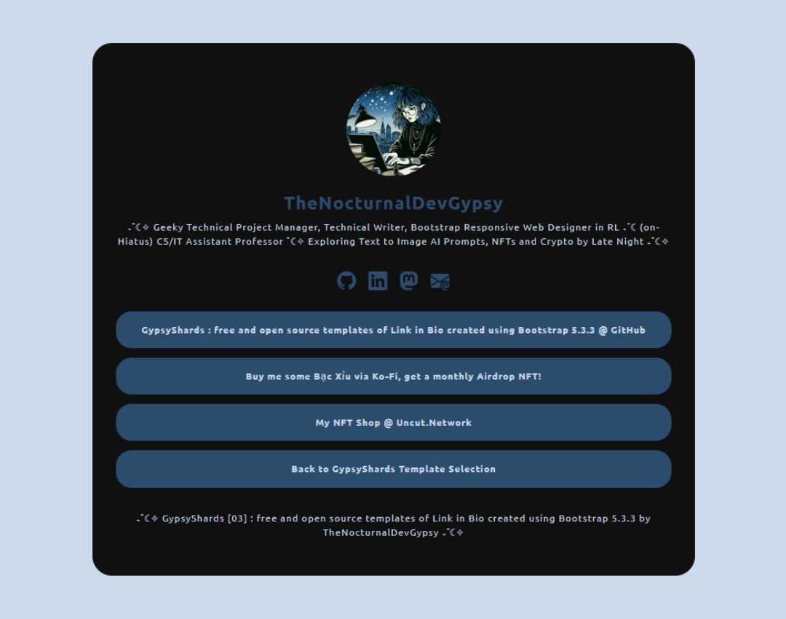
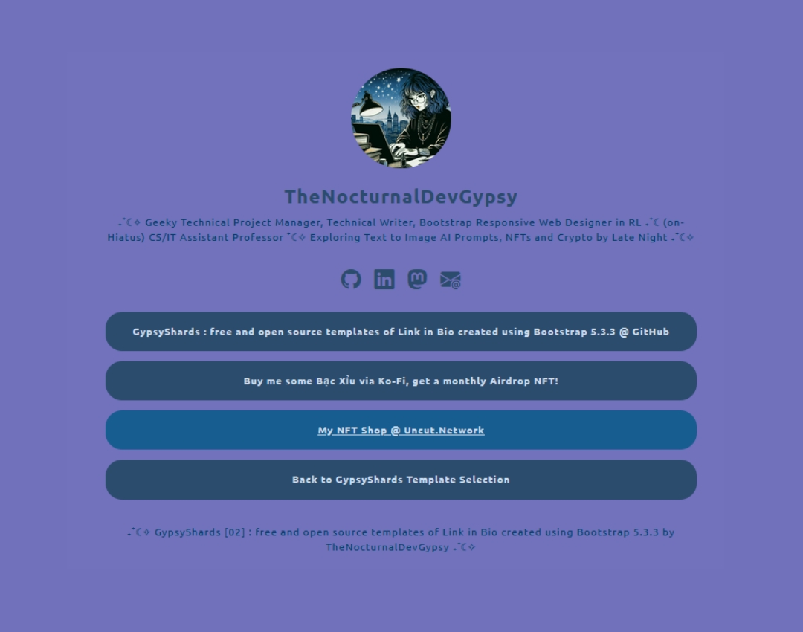
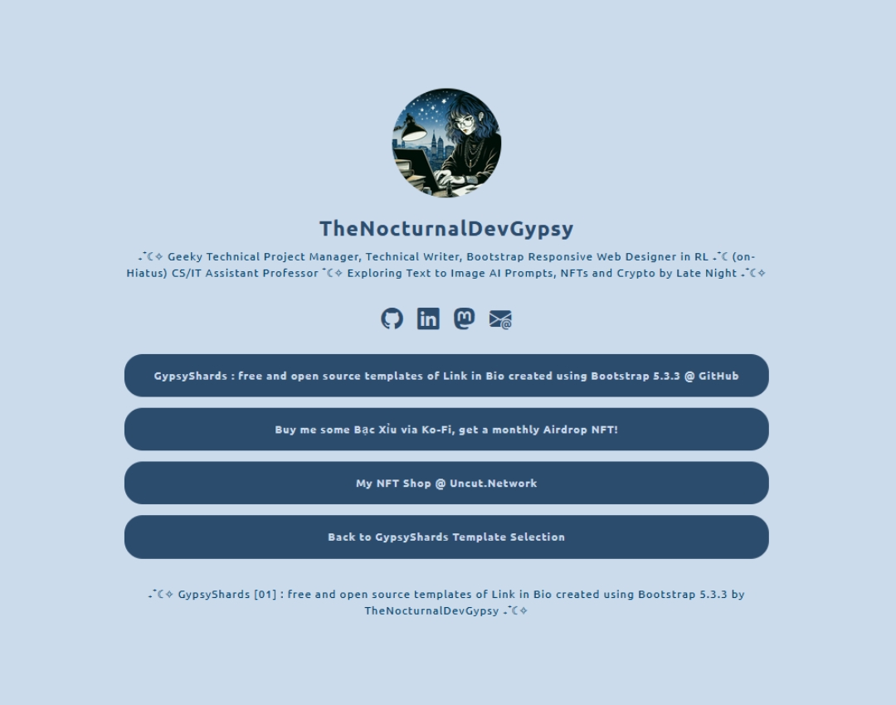

Looks like you stumbled to one of my personal project at GitHub, GypsyShards: one of my active personal project for refreshing my skills with the latest Bootstrap's release (5.3.3), focusing with creating Responsive (`mobile`, `tablet` and `desktop`) Link in Bio templates.
If you find this repo helpful, please don't forget to , and at GitHub, also, maybe by buying me a at Ko-Fi.
Theme 002.005 - Semi-Basic Link in Bio (variant): One Responsive Main Background Video from Youtube on Loop and Mute, Half-image/Half-solid color Container Background, Profile Picture, H1 Header, Description, Quick Social Media Links, Link Buttons with H2 Title and Description, and Two Line Footer.
Theme 002.004 - Semi-Basic Link in Bio (variant): One Responsive (Blurred via CSS) Main Background Image, Half-image/Half-solid color Container Background, Profile Picture, H1 Header, Description, Quick Social Media Links, Link Buttons with H2 Title and Description, and Two Line Footer.
Theme 002.003 - Semi-Basic Link in Bio (variant): One Responsive Main Background Image, Half-image/Half-solid color Container Background, Profile Picture, H1 Header, Description, Quick Social Media Links, Link Buttons with H2 Title and Description, and Two Line Footer.
Theme 002.002 - Semi-Basic Link in Bio (variant): Color Fading/Transitioning Main Background, Half-image/Half-solid color Container Background, Profile Picture, H1 Header, Description, Quick Social Media Links, Link Buttons with H2 Title and Description, and Two Line Footer.
Theme 002.001 - Semi-Basic Link in Bio (boilerplate): One Solid Color Main Background, Half-image/Half-solid color Container Background, Profile Picture, H1 Header, Description, Quick Social Media Links, Link Buttons with H2 Title and Description, and Simple Footer.
Theme 001.006 - Basic Link in Bio (variant): One Responsive Main Background Video from Youtube on Loop and Mute, One Semi-Transparent Solid Color Container Background, Profile Picture, H1 Header, Description, Quick Social Media Links, Link Buttons and Simple Footer.
Theme 001.005 - Basic Link in Bio (variant): One Responsive (Blurred via CSS) Main Background Image, One Semi-Transparent Solid Color Container Background, Profile Picture, H1 Header, Description, Quick Social Media Links, Link Buttons and Simple Footer.
Theme 001.004 - One Responsive Main Background Image, One Semi-Transparent Solid Color Container Background, Profile Picture, H1 Header, Description, Quick Social Media Links, Link Buttons and Simple Footer.
Theme 001.003 - Basic Link in Bio (variant): One Solid Color Main Background, One Solid Color Container Background, Profile Picture, H1 Header, Description, Quick Social Media Links, Link Buttons and Simple Footer.
Theme 001.002 - Basic Link in Bio (variant): Color Fading/Transitioning Main and Container Background, Profile Picture, H1 Header, Description, Quick Social Media Links, Link Buttons and Simple Footer.
Theme 001.001 : Basic Link in Bio (boilerplate): One Main and Container Solid Color Background, Profile Picture, H1 Header, Description, Quick Social Media Links, Link Buttons and Simple Footer.